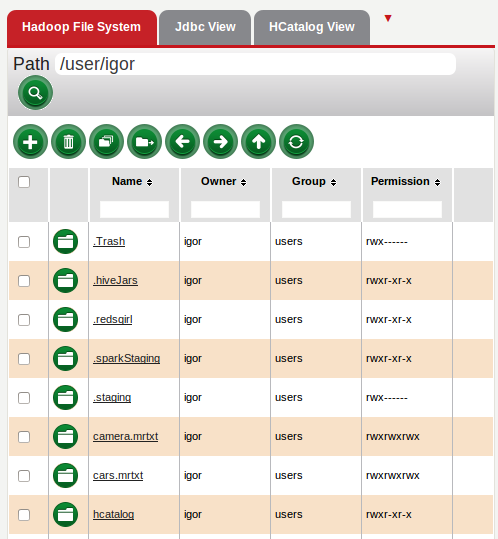
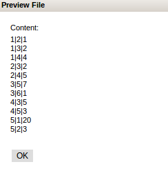

Hadoop File System will present the files that are on the HDFS. Browsing the file system can be done here and allows for viewing other directories and files as long as the right permissions are in place. The content of the files can also be previewed by clicking on the file name.
For more information click here


return to Red Sqirl help